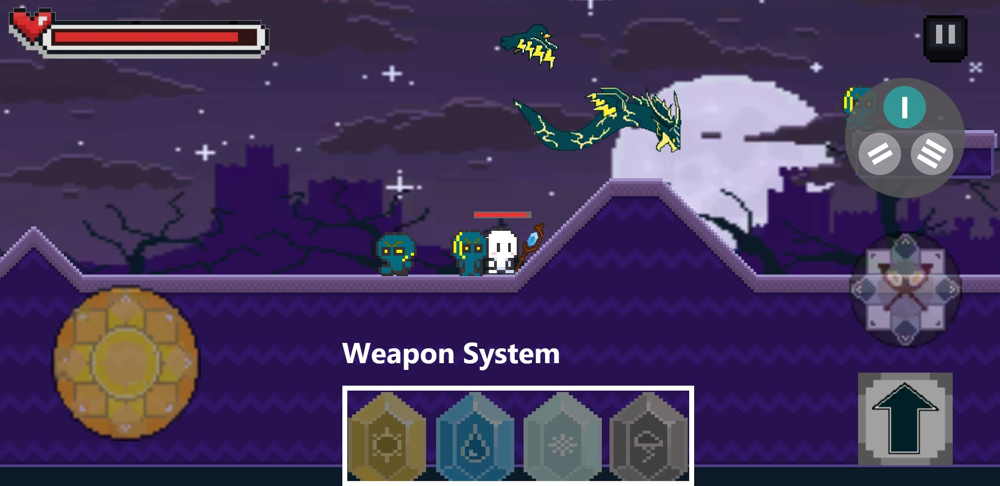
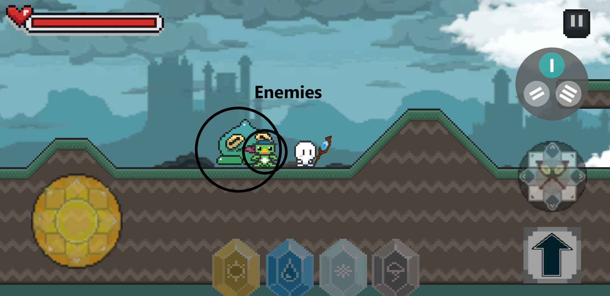
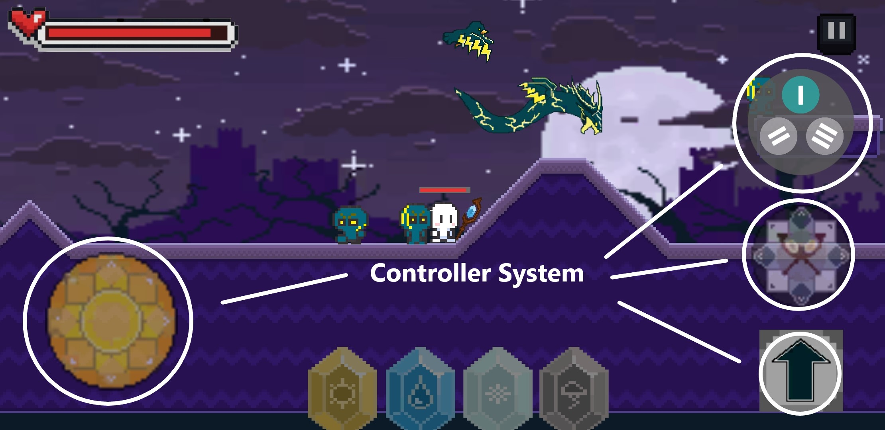
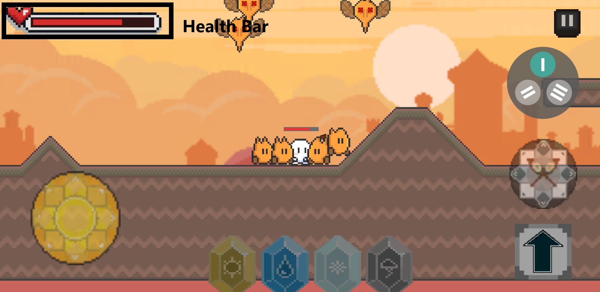

| Group Burgundy | ||
|---|---|---|
| Kieran Mahon | 20113064 | fnh2106@autuni.ac.nz |
| Myles Hosken | 20124720 | jky9144@autuni.ac.nz |
| Hanul Rheem | 20109218 | dgw7626@autuni.ac.nz |
This report is going to cover the usability study of a currently in development Mobile Android game. The research style will be Ethnographic and this is influenced by Phil Carter’s ‘Liberating Usability Testing’ paper. We felt as though this research style would fit well with an open discussion about what genuine users think about the game, and how the development team can make improvements. We chose observations as the usability study, as this will give the users free roam and allow them to explore the game fully with no prejudice or pre-existing narratives. The research will provide the team with development centric data for the developers to modify layout of the controls or improve user input sensitivity. Thematic data presented by the participants will also give the team any general data on how the players found the overall user interface of the game. To further this, we as researchers will assume the role of a “Nonparticipant”, generally this would be observed from a distance, but hence the nature of the software, we will need to be close by as to observe the actual gameplay upon the screen.
The observation will take between 5-10 minutes. The location of the observations will be conducted on Auckland University of Technologies campus. The observation will involve the candidate testing the software on a singular device to maintain a form of control. The software will begin at the main menu, and we will not be allocating any tasks for the user to complete. The observation will allow the user to explore the game as if they have just downloaded it and are trying it for the first time. We are choosing general candidates as the participants as we would like a mixture of people who are completely new to the software, and some may have a little experience. To utilize the ethnographic style and allow the user to experience the game naturally, we will be taking notes and observing any audio cues the users may talk about, facial expressions if user shows excitement or frustration. We will note down body language which relates to their enjoyment of the game. From this we hope to gather both development centric data and thematic data on how the game can be improved. Observing participants in a natural environment, much like how the game would be played in the real world, we hope this presents points which are currently unknown to us and that can be represented genuinely from real world users.
Upon post analysis of the user’s observations, it was shown that the game is acking an entry level for beginners, the game currently has no tutorial or way of letting the user know if what they are doing is beneficial or detrimental. This was presented in a multitude of ways from users looking a little confused or wanting to ask what they have to do. To combat this feature we are presenting the idea of a tutorial level that will introduce new players more clearly and explain the overall controls of the game. Experienced users may overcome this from having played mobile games before, but for an entry level player it would be difficult. Another theme was the weapon selection system. Currently there are 4 tiers of weapons: sun, rain, storm and snow. Users showed they were very underwhelmed with being able to choose different weapons by clicking the weapon selection system many times with nothing changing. The weapon selection should really be quite exciting and fun. We are to suggest that the game include more weapons and projectiles to shoot from to avoid the game becoming stale. From the observations it was shown that it really was not at a standard where it should be. Audio cues such as “Is there more weapons?”, “How do I tell which weapon is what?”, “Does this ability do more damage?”, are all suggestive that the weapon selection system needs work to engage the user and give them more power inside the game.
(Figure 1. Weapon selection system)

A core feature of the game is utilising the current state of the weather via a live API which adds a unique aspect to the game. Reflecting on the behaviour of the users, it wasn’t clear to them that the game was determining their location and updating the weather in-game according to the state of the weather at their location. More information or indicators could be added to notify the user that the game is doing such a task in the background. Another theme which arose is the fact that in each level the flying enemies were constantly out of frame, the players had no way of knowing where their target was or where to shoot them. This increased frustration among the users and it was apparent that this was an issue for all participants. To further this, the enemies currently all share the same functionality and behaviour in the game, participants were quick to pick up on this. No matter the size or type of enemy, users all felt that they were the same and repetitive, which suggests that for each enemy there exists different behaviour for each enemy type within the game.
(Figure 2. EcoRift enemy types shown in the game play)

One user asked “Can I get money? How do I increase my weapons?”, without a current tutorial screen, or information on how the player increases their weapons within the game, this is a valid concern for a user. Upon implementing a tutorial screen, there will be information on how the progression system works. However, users did enjoy the different element style levels inside the game.
The biggest recurring theme from the user observations was the on-screen ontrols, observing players trying to navigate in-game levels seemed like a hallenge at first especially if they were new to the platform. “Oh, it’s very hard o jump to x location”. The current on-screen controls are quite unique, and ot a lot of games currently use a double joy-stick system for a side scroller, this s potentially a design flaw and needs to be redesigned to suit such a platform. ensitivity input for this system may need to be reworked, or a new layout of layer control UI may need to be implemented to avoid players becoming rustrated and feeling like they can’t move properly. Suggestions will be made o increase the control the user has over the character in game, giving more ontrol to the user and enhancing their gameplay.
(Figure 3. showing movement controllers in game play)

To further the on-screen controls is the aiming joystick. One user commented, “This is super hard to aim”. The movement joystick shares the same sensitivity and input as the aiming joystick, so naturally they are both to be looked at. This could be partially solved by increasing the size of the projectiles or the enemies. As said by Zhang D., & Adipat B (2005) mobile application usability testing is presented with its own set of challenges, which highlights the input system being adopted from a desktop computer, potentially being the wrong design overall for the application. Following on from in-game movement, is the jump feature. Inside the game there is currently a bug which forces the player to jump an extra time if they hold the button down too long. Observing users trying to do this led to a lot of them becoming frustrated as it took nearly a minute to navigate over a small piece of terrain. The action listeners responsible for this system will need to be reviewed and changed as the game is somewhat unplayable with this in place. The fact that there is an extra action happening for one input suggests there is an underlying bug in the jump button implementation. This was shown in all 5 participants in each observation. The aiming system presented a set of new problems, users struggled to hit the enemies with precision that felt natural. This could be worked to the projectile size being bigger alongside the hitbox for enemies to also be increased, the users had to spend quite a long time trying to aim at one enemy in particular especially if it was moving. As mentioned previously, the flying enemies were constantly out of frame for the user, reducing the current height value of the flying enemies to something more suitable to the users’ view will help resolve this issue. One user mentioned “How do I get health back?”, “Is there health regeneration?”. Currently the player in game cannot gain or regenerate health, which should be present in such a game in which you take damage and can die, leading to restart the level.
(Figure 4. EcoRift displaying health generation bar in game play)

In summary, a total of five people took part in an unobtrusive observation and each participant displayed both common and unique behaviour whilst testing the product. An accomplished user study by N Akmal Muhamat et al., (2021) suggest that building mobile applications benefit from development principles, for this product, we have found that implementing an agile development methodology would be crucially beneficial as this caters for testing as we go and aligns with Phil Carter’s approach of reducing post test analysis time. The most common theme presented was the current controls system, participants found this very unorthodox to use and will be reworked before future usability tests. The controls should be scaled with each device as not everyone has the same mobile device, they should also be customizable to suit each individual's preferences. The weapon system is very lacklustre and needs significant improvement to keep players engaged, there are currently only four options to choose from. From the four options there is a low amount of difference between each projectile, leaving users confused and unaware of what they currently have selected. Adding in more weapon selection options will be done to combat this. The current weather API is updating the weather in-game based upon the player's current location, yet the user is totally unaware that this is happening. For such a feature the user should be aware of the current weather state and how that impacts the game, information inside the tutorial level will inform the user of this. The range of enemies inside the game left participants feeling like there was more to be had, the enemies in game currently all share the same AI script and only their image is different. Updating each enemy's AI for their respective element is a suitable solution to allow players to feel as if there is a significant difference between them. Users were left feeling unaware of which way to move within the game and there is currently no way of letting users know which way to go. This information can also be included within a tutorial level. The point system and health regeneration information will also be included within the tutorial level to inform users of how the game operates and how they can achieve higher skills
In conclusion, the general user experience needs to be improved, from thematic views such as allowing new players a lower barrier to entry, better explanation of their actions in game dictating if it is beneficial or detrimental. The weapon system needs to be improved as players really did not find this engaging and would feel the same to each of them if there was simply only one weapon to choose from. Users found general movement in the game somewhat challenging especially when combining movement with jumping. Flying enemies within the game were practically invisible to the user and will need to be changed before the next set of usability tests.